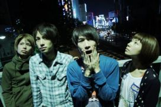

BITCH S
■ Debut Mini Album [はじまる] セルフライナーノーツ
1.七隈線
福岡在住バンドであった僕らが上京を決めた時、“福岡”の曲が作りたくて作った決意曲。
七隈線は福岡の地下鉄。ちょっとローカルだけど、先頭車両に乗れば運転席が丸見えで程よく興奮します。
2.パラパラマンガ
今日という日はパラパラマンガのようにあっという間に過ぎていくが、
僕らはパラパラマンガのように確実に1ページずつ前に進む。
イエーーーーーーーイ！
3.バースデー！！！
男女混声のA・Bメロまではよく意味がわからない曲とお感じになることと思いますが、サビですべてがわかります！！！
マンネリした毎日にもちょっとした希望はもちたいところ。
4.東京8ビート
人間は誰でもいつか死ぬ運命。だけどそんなことは置いといて、
バカやって笑ってドキドキしてビリビリして生きていきたいものですね。
5.押して曲げる
君の頭を押して曲げる。クイっと。すると視界が変わる。
考え方が変わる。簡単！3分でできる革命。
6.エレギーター
たまに落ち込むことあるけど嬉しいことがあると気分は上々。
僕らは高層ビルのエレベーター。
ギターのようにギュイイイイン！と、どんどんアガっていく！
■推薦コメント
＜素晴らしい音楽をありがとう。＞
糞みたいにつまらない深夜番組も糞みたいに暇な夜には丁度良く
泥のように濁った珈琲も泥のような眠たさには丁度良いように
歪んだ心にはぴたりとディストーションがささくれ立った愛には拍の裏への愛撫が
このレコードはきみの範疇を越えない
それは君次第で未知なる場所まで行けることを意味する
はじまる、か、はじめる、か
演奏旅行中の福岡のホテルにて
金田康平(THEラブ人間/歌手)
BITCH Sのいいところを羅列するのはとても簡単なんだけど、
今回の音源もすごく良いんだけど、
「今後に期待のバンド」の域をまだ抜け出せていないように感じた。
僕は音楽活動をする上で演者と聴き手の間にいつも溝を感じている。
そこを簡単に飛び越えられるだけのポテンシャルをこのバンドが持っていることをよく知っているだけに、
まだまだ可能性を感じずにはいられないです。
UNISON SQUARE GARDEN Vo/Gt 斎藤宏介
BITCH Sとは随分前に新宿MARZで対バンして、
九州からライブしに来てるって聞いてすごいねって言って、おれも九州出身なんだって話して、ドラムのモトヨシ君と仲良くなって。
しばらくして「バンドで東京に来た」ってモトヨシ君からメールが来て、それもまたすげーなーって話して。
同じ上京したもん同士、しかもボーカルがおれに似てるし、メンバーに女の子いるし、とにかく運命みたいにカランコロンと共通点多くて。
そしたらまさか俺らが最初に出したインディーズレーベルからＣＤ出すって聞いて、もうこれは運命だろって思った。
福岡でちゃんと実績あったのに、借金してまで東京に来て、今から「はじまる」ってＣＤを出してしまう彼らのパワーは、このミニアルバムに全部込められてる。
一曲目の「七隈線」聴いたらみんなわかるよ。
東京カランコロン Vo/Gt いちろー

＜BITCH S PROFILE＞
L⇔R
中島 元良
汐碇 真也
原 コウヘイ
岡 愛子
アーティスト公式サイト
ライブ・メディア情報


福岡市で結成された男女4人組ポップなロックバンド。
福岡時代から今をときめく数々のバンドと共演を重ね、地元メディアにも多数出演。
リリースした自主音源２作は完売、計2000枚以上を記録。
音楽雑誌「QUIP MAGAZINE」主催のライブサーキット“shimokita round up”に福岡から3年連続出演。
毎回入場規制がでるほどの人気で注目を浴びる。
2012年1月、メンバー全員で上京。渋谷、下北沢、新宿のライブハウスを中心としたライブ活動で、東京の音楽業界でも話題になる。
8月、“RISING SUN ROCK FESTIVAL 2012”に、RISING STARとして出演、ライブ後の物販には長蛇の列！
9月、新宿のライブサーキット“ETERNAL ROCK CITY 2012”に出演、満員御礼となった。
12月、そんなBITCH S が、10-FEET、藍坊主、東京カランコロン、SAKANAMONを輩出したEVANS RECORDSからの1st mini album をリリース！